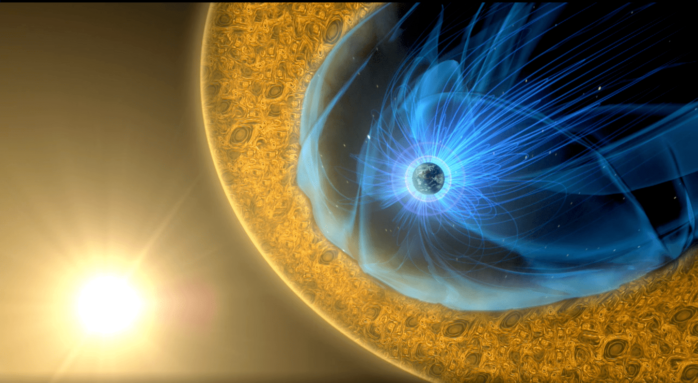
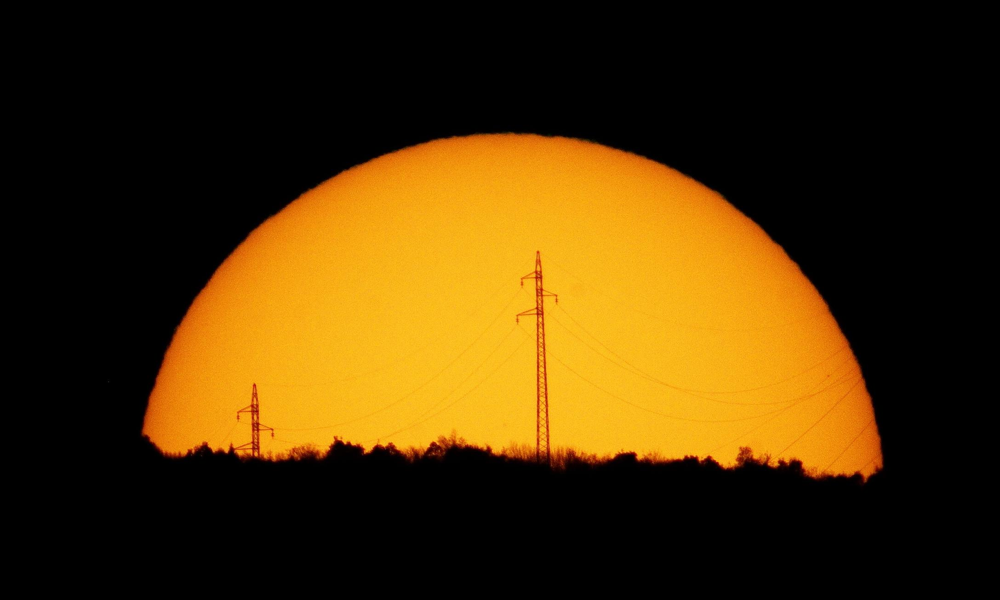
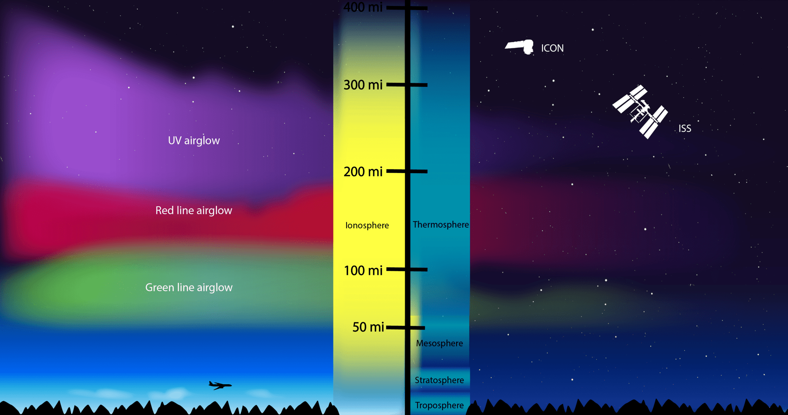
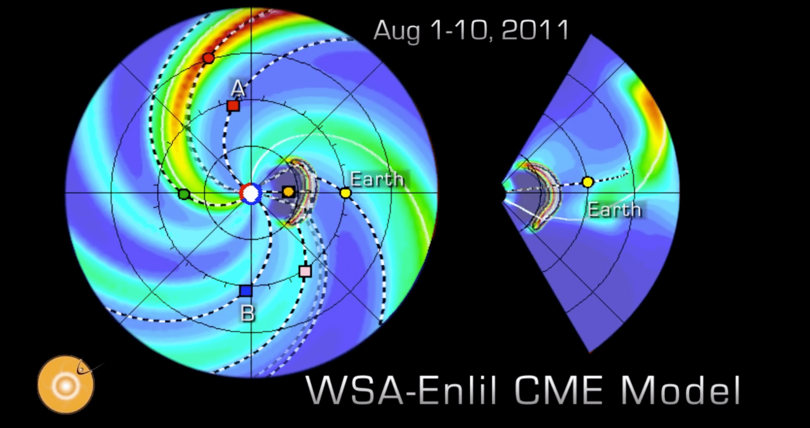

The Space Weather Lab at George Mason University was formally established in October 2006. The faculty in the lab are mainly affiliated with the Department of Physics and Astronomy. We emphasize multi-disciplinary science that crosses traditional department boundaries. Students in our space weather program will develop a deep understanding of the Sun, the heliosphere, geospace, and their interactions.
Space weather research addresses the physics of the connected Sun-Earth system. It specifies and predicts the physical conditions in space that adversely affect the safety of manned space missions and of technological systems such as satellites, electric power grids, and communication and navigation systems. It is supported by major national programs, including the National Space Weather Program (NSWP), the Living With a Star Program (LWS), and a variety of NASA, NSF, DOD, and NOAA offices. There is also an International LWS program that involves more than 20 international space agencies.
If you are interested in pursuing a graduate degree and would like to conduct research on Space Weather problems as an undergraduate or graduate student, we encourage you to contact any of the faculty members.
Director: Erdal Yiğit
Raphael Attie - Research Assistant Professor; Max Planck Institute for Solar System Research, 2016. Plasma flows in the heliosphere, mapping photospheric flows as well as solar wind flows using SDO, STEREO, and MHD simulations; applying Machine Learning and Deep Learning for plasma flow mapping, semantic segmentation of solar atmospheric features, as well as anomaly detection for detecting and analyzing solar energetic events.
Laura Balmaceda - Research Associate Professor; Solar Energetic Particles, solar flares, and coronal mass ejections.
Sherry Chhabra - Postdoctoral research fellow; PhD, New Jersey Institute of Technology, 2021. CMEs, solar radio bursts, solar corona.
Suman Dhakal - Postdoctoral research fellow; PhD, George Mason University, 2021. Solar flares and coronal mass ejections.
Bob Meier - Research Professor; PhD, University of Pittsburgh, 1966. Upper atmospheric and ionospheric physics, chemistry, and dynamics with special emphasis on the development of techniques for remote sensing of composition and temperature.
Dusan Odstrcil - Research Professor; PhD, Comenius University, 1992. 3-D magnetohydrodynamic simulations of dynamic phenomena in the solar wind, including corotating interaction regions, coronal mass ejecta, and interplanetary shocks.
Joshua Pettit - Assistant Research Professor; PhD, 2019, University of Colorado at Boulder, 2019. Upper and lower boundary effects on the middle and upper atmosphere of Earth.
Art Poland - Research Professor; PhD, Indiana University, 1969. Energy transport processes in the solar atmosphere involving radiative transfer, hydrodynamic modeling, and the use of observational data (especially spacecraft data) to provide boundary conditions and predicted observables.
Ed Oughton - Assistant Professor; PhD, University of Cambridge, 2015. Spatial computing, geographic data science, image processing, and risk analysis of space weather impacts on critical infrastructure.
Carlos Arturo Perez-Alanis - Postdoctoral Researcher; PhD, 2023, Institute of Geophysics, UNAM, Mexico.
John Shebalin - Affiliate Research Professor; PhD, College of William & Mary 1982. Fundamental aspects of magnetohydrodynamic turbulence; coherent structure and self-organization in turbulent plasmas; planetary and stellar dynamos; charged particle motion and trapping in planetary magnetic fields.
Dean Thomas - Affiliate; PhD, State University of New York (SUNY), 1987. Magnetospheric physics, space weather, and geomagnetically induced currents.
Michael Summers - Professor; PhD, California Institute of Technology, 1985. Structure and evolution of planetary atmospheres.
Bob Weigel - Professor; PhD, University of Texas, Austin, 2000. Magnetospheric physics and geomagnetism, solar wind/magnetosphere/ionosphere coupling.
Erdal Yiğit - Professor PhD, University College London, 2009. Mars, gravity waves, geomagnetic storms, and thermosphere-ionosphere physics.
Jie Zhang - Professor; PhD, University of Maryland, 1999. Solar physics and space weather research. Initiation processes of flares and coronal mass ejections, kinematic and dynamic properties of CMEs, Interplanetary CMEs and solar wind disturbances, drivers of geomagnetic storms, long-term and large-scale variation of solar atmosphere, image processing methods, auto-detection of transient events, and data assimilation.
Dieter Bilitza - Research Professor; PhD, Albert-Ludwigs University, Freiburg, Germany, 1984. Ionospheric physics, thermodynamics, and solar-terrestrial physics with a strong background in statistical modeling of ionospheric parameters. The principal author of the International Reference Ionosphere (IRI), a model widely used for applications in science, engineering, and education, and is the recognized international standard for ionospheric parameters.
Carlos Braga - Research Professor; PhD, Instituto Nacional de Pesquisas Espaciais, 2015. Coronal mass ejections and their corresponding interplanetary structures near the Earth, and their effects on the Earth's magnetosphere and ionosphere; interplanetary magnetic structures using cosmic ray data from the Global Muon Detector Network; solar-interplanetary-geomagnetic disturbances using satellite data and Global Muon Detector Network (GMDN) observations for Space Weather applications.
John Mariska - Research Professor; PhD, Harvard University, 1977. Observational and theoretical study of the structure, dynamics, and radiating properties of the solar transition region and corona.
Chris St. Cyr - Research Professor; PhD, University of Florida, 1985. Coronal mass ejections, solar wind, and solar energetic particles.
Salman Tarik - Postdoctoral Researcher. PhD, University of New Hampshire, 2021. CMEs, flux ropes, and space weather prediction.
Phil Richards - Research Professor; PhD, La Trobe University, Australia, 1978. Ionosphere, thermosphere, and magnetosphere modeling, data assimilation, and space weather.
Yuming Wang - Research Professor; PhD, Chinese Academy of Sciences. Solar physics, space physics, planetary physics, and space instruments for magnetic fields and plasmas.
Spiro Antiochos - Affiliate Research Professor; PhD, Stanford University, 1976. Coronal loop dynamics, coronal condensations, topology of prominence magnetic fields, initiation of coronal mass ejections/solar flares, coronal jets, sources of the slow solar wind
Alexis Rouillard - Affiliate Research Professor. Solar wind, heliosphere energetic particles, and coronal mass ejections.
Angelos Vourlidas - Affiliate Research Professor; PhD, 1993, New Mexico Institute of Mining and Technology. Solar activity, from the chromosphere to the corona to the inner heliosphere.
Jim Chen - Affiliate Research Professor; PhD, Cornell University, 1979. Plasma physics, solar physics.
James Klimchuk - Affiliate Research Professor; PhD, University of Colorado, 1985. Solar physics, MHD physics.
Larry Paxton - Affiliate Research Professor; PhD, University of Colorado, 1983. Ionospheric physics, space weather, and climate change.
Dean Pesnell - Affiliate Research Professor; PhD, University of Florida, 1983. Atmospheric oscillations, Hydrodynamics of real gases, nonlinear effects, computational physics, numerical analysis, Fourier analysis of data, Quantum mechanics, collision cross sections, equation of state, and opacity, Radial and nonradial stellar pulsations, and Stellar structure.
Melissa Bierschenk; Advisor: Jie Zhang.
Matthew Dupertuis; Advisor: Jie Zhang.
Rich Fry, Modeling of Jovian Middle Atmosphere; Advisor: Erdal Yiğit.
Ayden Gann, Effects of Hurricanes in Earth's Atmosphere-Ionosphere System; Advisor: Erdal Yiğit.
Heather Jiles, Radiation Belt Particle Simulation; Advisor: Bob Weigel.
Andrew Leiser; Advisor: Jie Zhang.
Joao Pereira; Advisor: Jie Zhang.
Lucy Wilkerson, GIC Modeling and Prediction; Advisor: Bob Weigel.
Alvarez, Alejandro, PhD, 2022, "Improving Solar Flare Forecasting Based on Time Series Magnetic Features Using Advanced Machine Learning Method"; Advisor: Jie Zhang.
Baldwin, Katherine, MS, 2011, "Kinematic Characterization of In/Out Pair of Ejections as Seen in SECCHI Images"; Advisor: Jie Zhang.
Bandaru, Sandya, MS in IT, 2008; Software development for the Virtual Radiation Belt Observatory. Project Advisor: Bob Weigel.
Bell, Randy, MS, 2009; Advisor: Bob Weigel.
Briggs, Brian, MS, 2012, "Determination of Sub-photosphere Solar Active Region 3D Magnetic Field Structure From Emergence Observations"; Advisor: Jie Zhang.
Battams, Karl, PhD, 2018, "Reduction and Synopses of Multi-Scale Time Series with Applications to Massive Solar Data"; Advisor: Bob Weigel.
Brown, Steven, PhD, 2018, "Improved Description of the Annual Anomaly by the International Reference Ionosphere"; Advisors: Dieter Bilitza and Erdal Yiğit.
Bor, Dennies, Uncertainty quantification of the impact of adverse space weather on vital engineering systems and probabilistic models based on global magnetosphere simulations coupled with magnetotellurics models; Advisor: Ed Oughton.
Chintzoglou, Georgios, PhD, 2016, "A Study of Solar Magnetic Fields Below the Surface, at the Surface, and in the Solar Atmosphere - Understanding the Cause of Major Solar Activity"; Advisor: Jie Zhang.
Colaninno, Robin, PhD, 2012, "Investigation of the Forces that Govern the Three-Dimensional Propagation and Expansion of Coronal Mass Ejections from Sun to Earth"; Advisor: Angelos Vourlidas.
Cox, Bradley, MS, 2020; Advisor: Jie Zhang
Curtis, Brian, PhD, 2014, "Validation of Magnetospheric Magnetohydrodynamic Models"; Advisor: Bob Weigel.
Dandenault, Patrick, PhD, 2017, "Characterization of Thermospheric Neutral Winds Using Empirical Modeling and Observational Validation"; Advisor: Phil Richards.
Dhakal, Suman, PhD, 2021, "Causes of Solar Eruptions: A Comparative Study of Super-Active Active and Low-Active Active Regions"; Advisor: Jie Zhang.
Evans, Rebekah Minnel, PhD, 2011, "The Evolution of Modeled Coronal Mass Ejecta in the Lower Corona: Effects of the Heating and Acceleration of the Solar Wind"; Advisor: Merav Opher.
Forjan, Gary, PhD, 2009, "Two-dimensional Magnetohydrodynamic Simulation of Impulsively Heated Solar Flux Tubes with Magnetic Field-Aligned Thermal Conduction"; Advisor: Art Poland.
Henderson, Christina, MS, 2007; Advisor: Art Poland
Hess, Phil, PhD, 2015, "Understanding the Evolution and Propagation of Coronal Mass Ejections and Associated Plasma Sheaths in Interplanetary Space"; Advisor: Jie Zhang.
Hess Webber, Shea, PhD, 2016, "Coronal Holes and Solar f-mode Wave Scattering off Linear Boundaries"; Advisor: Dean Pesnell.
Jacobs, Adam, PhD, 2019, "Atmospheric Physics and Chemistry of Pluto's Haze Layers"; Advisor: Mike Summers.
Kunkel, Valbona, PhD, 2012, "Evolution of Coronal Mass Ejections From the Sun to 1 AU: Properties of Magnetic Field and A Modified Flux Rope Model"; Advisor: Jie Zhang.
Karna, Nishu, PhD, 2016, "A comprehensive study of cavities on the sun: Structure, formation, and evolution"; Advisor: Jie Zhang.
Kercher, Andrew, PhD, 2014, "Computational Methods for Ideal Magnetohydrodynamics"; Advisor: Bob Weigel.
Lee, Erik, Independent Study on Neural Network Prediction of In-Situ Magnetosphere Magnetic Field; Advisor: Bob Weigel.
LaNeve, Caitlin, Space Weather impact on Space Operations; Advisor: Ed Oughton.
McDonald, Sarah, PhD, 2007, "Day-to-day and longitudinal variability of the nighttime low latitude terrestrial ionosphere"; Advisor: Mike Summers.
Nep, Rachel, MS, 2013; Advisor: Bob Weigel
Nikou, Eleni, PhD, 2024; "Understanding the Structure and Evolution of Coronal Mass Ejections Using STEREO and Exploring their Magnetic Origin"; Advisor: Jie Zhang.
Olmedo, Oscar, PhD, 2010, "A Study of the Initiation Process of Coronal Mass Ejections and the Tool for Their Auto-Detection"; Advisor: Jie Zhang.
Panka, Peter, PhD, 2017, "New non-LTE Model of OH and CO2 Emission in the Mesosphere-Lower Thermosphere and its Application to Retrieving Nighttime Parameters"; Advisor: Erdal Yiğit
Sakib, Md Nazmus, PhD, 2025, "Exploring the structure and variability of the terrestrial ionosphere using high-resolution model inputs"; Advisors: Erdal Yiğit and Bob Meier.
Poomvises, Watanachak (Yod), PhD, 2010, "Kinematic and Morphological Evolution and Dynamics of Coronal Mass Ejections in Interplanetary Space"; Advisor: Jie Zhang.
Stephens, Grant, PhD, 2025, "Revealing the Global Morphology of the Magnetosphere During Substorms using Data-Mining-Driven Empirical Magnetic Field Models"; Advisor: Bob Weigel.
Rowland, William, MS, 2011; Independent study on intra-calibration of Particle Detectors on a Three-Axis Stabilized Geostationary Platform; Advisor, Bob Weigel.
Saxena, Prabal, PhD, 2015, "Extreme Physical Phenomena Associated with Close-In Solid Exoplanets: Models and Consequences"; Advisor: Mike Summers.
Stickley, Nathaniel, MS 2008; Advisor: Bob Weigel
Veibell, Victoir, PhD, 2016, "Statistical Modeling of Earth's plasmasphere"; Advisor: Bob Weigel.
Winter, Eric, PhD, 2025, "Applications of Neural Networks to Solve the Differential Equations of Magnetohydrodynamics"; Advisor: Bob Weigel.
Alamin, Omar, Observations of the upper atmosphere with ICON satellites (Advisor: Erdal Yiğit)
Bates, William, Diffusion in the Martian upper atmosphere, (Advisor: Erdal Yiğit)
Drake, ErinGrace, Solar physics (Advisor: Art Poland)
Gallagher, Brendan, SOHO Solar Image Analysis (Advisor: Bob Weigel)
Gayhart, Matthew, Solar physics (Advisor: Art Poland)
Gutarra-Leon, Angel, Simulation of Radiation Belt Particles (Advisor: Bob Weigel)
Gorzka, Joseph, Solar physics (Advisor: Art Poland)
Harris, Abby, Satellite observations of Venusian atmosphere (Advisor: Erdal Yiğit)
Lumkin, Gabe, Solar physics (Advisor: Art Poland)
Marsh, Liam, Solar physics (Advisor: Art Poland)
Mazzullo, Christopher, Solar physics (Advisor: Art Poland)
Mejia, Jimmy, Solar physics (Advisor: Art Poland)
Pil, Seung, Solar physics (Advisor: Art Poland)
Quaresima, Gary, Physics, Magnetospheric Drivers of Strong Electric Field Enhancements on Earth’s Surface that Drive Geomagnetically Induced Currents (Advisor: Bob Weigel)
Quiroz, Darwin, Intercomparison of Plasmasphere Models (Advisors: Dieter Bilitza and Bob Weigel)
Rawls, Matt, Solar physics (Advisor: Art Poland)
Toler, Wesley, Visualization of Atmospheric Data-Driven Models (Advisor: Bob Weigel); Intercomparison of plasmasphere models (Advisor: Dieter Bilitza)
Tran Tran, Solar physics (Advisor: Art Poland)
Yim, Pisal, Solar physics (Advisor: Art Poland)
Rao, S. - Independent Study on The Analysis of Space Weather Forecasting Contest Data (Advisor: Bob Weigel)
Dasgupta, S. - Independent Study on Low-Cost Magnetometer Experiments (Advisor: Bob Weigel)
An Introduction to Space Weather by M. Hapgood
Introduction to Space Weather by M. Moldwin
Space Physics: An Introduction to Plasmas and Particles in the Heliosphere and Magnetospheres by M. Kallenrode
Introduction to Space Physics by M. Kivelson and C. Russell
Resource Letter SW1: Space Weather in American Journal of Physics by D.N. Baker and L. Lanzerotti
American Geophysical Union's Space Physics and Aeronomy Resources
NOAA's Space Weather Prediction Center
NASA's Community Coordinated Modeling Center
The European Space Agency's Space Weather Service Network